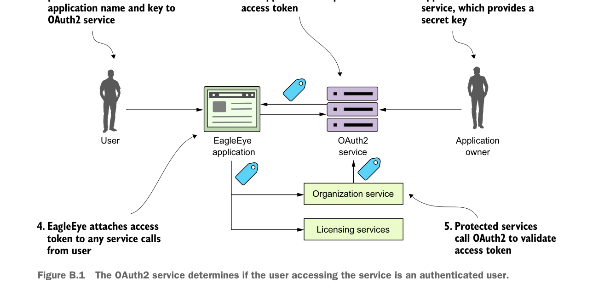

Dịch vụ OAuth2 xác định liệu người dùng truy cập dịch vụ có phải là người dùng đã xác thực hay không.
- Người dùng đăng nhập vào EagleEye và cung cấp thông tin đăng nhập cho ứng dụng EagleEye. EagleEye truyền thông tin đăng nhập của người dùng, cùng với tên ứng dụng/khóa bí mật ứng dụng, trực tiếp tới dịch vụ OAuth2 EagleEye.
- Dịch vụ OAuth2 EagleEye xác thực ứng dụng và người dùng, rồi cấp token truy cập OAuth2 trả về cho người dùng.
- Mỗi khi ứng dụng EagleEye gọi một dịch vụ thay mặt người dùng, nó truyền kèm token truy cập do máy chủ OAuth2 cung cấp.
- Khi một dịch vụ được bảo vệ được gọi (trong trường hợp này, licensing service và organization service), dịch vụ đó gọi ngược lại dịch vụ OAuth2 EagleEye để xác thực token. Nếu token hợp lệ, dịch vụ được gọi cho phép người dùng tiếp tục. Nếu token không hợp lệ, dịch vụ OAuth2 trả về mã trạng thái HTTP 403, cho biết token không hợp lệ.
B.2 Cấp quyền client credential
Grant client credential thường được dùng khi một ứng dụng cần truy cập tài nguyên được bảo vệ bởi OAuth2, nhưng không có con người tham gia vào giao dịch. Với loại grant client credential, máy chủ OAuth2 chỉ xác thực dựa trên tên ứng dụng và khóa bí mật do chủ sở hữu tài nguyên cung cấp. Một lần nữa, grant client credential thường được dùng khi cả hai ứng dụng thuộc sở hữu của cùng một công ty. Sự khác biệt giữa password grant và grant client credential là grant client credential chỉ xác thực bằng tên ứng dụng đã đăng ký và khóa bí mật.